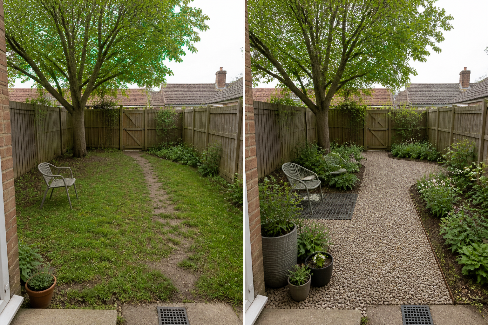

Make the daily route unmistakable
Connect the back door and gate with one direct, durable-looking route. Its real width, edging, base, permeability, accessibility, and winter performance must be verified on site.
A lawn-free backyard still needs comfortable movement, usable open ground, planted depth, working drainage, and realistic maintenance. Divide those jobs first; choose materials only after the site conditions are understood.
Editorially reviewed August 13, 2026.
This AI-generated comparison is visual inspiration, not a measured plan, drainage design, root assessment, material specification, planting plan, cost estimate, or construction guarantee.

Connect the back door and gate with one direct, durable-looking route. Its real width, edging, base, permeability, accessibility, and winter performance must be verified on site.
Leave an uncluttered area for movement and changing uses instead of filling every former lawn edge with furniture or planting. Test movable seating before committing to a permanent surface.
Broader, connected beds create depth more clearly than scattered pots. The image suggests form and layering only; plant selection depends on local light, soil, climate, roots, mature size, and safety.
The concept does not move the mature tree, alter boundaries, raise the ground, hide the drain, widen the gate, or claim that gravel is suitable everywhere. Those fixed conditions determine excavation limits, root protection, water movement, access, and the realistic material options.
Measure doors, gates, bins, storage, furniture, play or pet needs, maintenance access, and any required clear route. Do not infer dimensions from the concept.
Observe runoff, ponding, drains, existing falls, neighboring water, soil behavior, and downpipes in wet weather. Surface or level changes may need site-specific professional input.
Locate roots, utilities, inspection covers, irrigation, cables, pipes, and easements before excavation or compaction. An image cannot identify safe digging or loading zones.
Ask how each option handles weeds, leaf litter, cleaning, displacement, heat, glare, frost, accessibility, repairs, watering, and end-of-life disposal in the actual location.
Avoid replacing the whole yard with one hard surface, trapping moisture at walls, compacting around established roots, blocking the gate or drain, or choosing loose material without considering wheels, shoes, pets, leaf litter, and migration. Stop and obtain appropriate local advice when removal or replacement affects drainage, levels, roots, utilities, accessibility, boundaries, permits, or structural work.
Possible visual categories include planted beds, locally suitable living groundcover, mulch, gravel, decking, paving, or a mixture of surfaces. The right choice depends on drainage, climate, access, roots, use, upkeep, local rules, and exact product performance.
Not automatically. It may remove mowing, but other surfaces can require weeding, sweeping, washing, topping up, joint care, drainage clearing, repairs, or watering. Compare the full recurring workload before deciding.
First identify why it is struggling and test the intended routes and uses. A staged change can reveal water, shade, soil, root, or access problems before the entire ground layer is altered.
Upload a level, wide photo to compare ground-use directions while keeping real access, drainage, roots, and maintenance in mind.
AI-generated visualizations are concepts. Verify measurements, water movement, roots, utilities, local rules, material specifications, plant suitability, costs, and professional requirements before buying or building.